1 Πολυωνυμικές Εξισώσεις Και Ανισώσεις
1.1 Πολυωνυμική Εξίσωση Βαθμού \(\nu\)
α) Ορισμοί
Πολυωνυμική εξίσωση βαθμού \(\nu\) (\(\nu \in \mathbb{N}\)) ονομάζεται κάθε εξίσωση της μορφής: \[\mathbf{a_\nu x^\nu + a_{\nu-1} x^{\nu-1} + \dots + a_1 x + a_0 = 0}\] όπου \(a_\nu \neq 0\) και \(a_0, a_1, \dots, a_\nu \in \mathbb{R}\).
Ρίζα μιας πολυωνυμικής εξίσωσης ονομάζεται κάθε πραγματικός αριθμός \(\rho\) που μηδενίζει το πολυώνυμο \(P(x) = a_\nu x^\nu + \dots + a_0\), δηλαδή για τον οποίο ισχύει \(\mathbf{P(\rho) = 0}\).
β) Τρόπος Επίλυσης
Για τις εξισώσεις \(1\)ου και \(2\)ου βαθμού χρησιμοποιούμε τους γνωστούς αλγεβρικούς τύπους. Για πολυωνυμικές εξισώσεις βαθμού \(\nu > 2\), η γενική μέθοδος επίλυσης στηρίζεται στη μέθοδο της παραγοντοποίησης.
Μετασχηματίζουμε την εξίσωση στη μορφή: \[P_1(x) \cdot P_2(x) \cdots P_k(x) = 0 \iff P_1(x) = 0 \quad \text{ή} \quad P_2(x) = 0 \quad \text{ή} \dots \text{ή} \quad P_k(x) = 0\]
Για την αναγωγή σε γινόμενο παράγοντων χρησιμοποιούμε:
Κοινό παράγοντα και ομαδοποίηση.
Αλγεβρικές ταυτότητες (διαφορά τετραγώνων, διαφορά/άθροισμα κύβων, κ.λπ.).
Το θεώρημα ακέραιων ριζών και το σχήμα Horner.
1.1.1 Παραδείγματα Επίλυσης
Παράδειγμα 1 (Με Ομαδοποίηση):
Να λυθεί στο \(\mathbb{R}\) η εξίσωση:
\[x^3 - 3x^2 - x + 3 = 0\]
Λύση
Ομαδοποιούμε τους όρους ανά δύο:
\[x^2(x - 3) - (x - 3) = 0 \iff (x - 3)(x^2 - 1) = 0\] \[(x - 3)(x - 1)(x + 1) = 0\]
Εξισώνουμε κάθε παράγοντα με το μηδέν:
\[x - 3 = 0 \iff \mathbf{x = 3}\] \[x - 1 = 0 \iff \mathbf{x = 1}\] \[x + 1 = 0 \iff \mathbf{x = -1}\]
Άρα το σύνολο λύσεων είναι \(S = \{-1, 1, 3\}\).
Παράδειγμα 2 (Με Κοινό Παράγοντα):
Να λυθεί στο \(\mathbb{R}\) η εξίσωση:
\[2x^4 - 8x^2 = 0\]
Λύση
Βγάζουμε κοινό παράγοντα το \(2x^2\): \[2x^2(x^2 - 4) = 0 \iff 2x^2(x - 2)(x + 2) = 0\]
\(2x^2 = 0 \iff \mathbf{x = 0}\) (διπλή ρίζα)
\(x - 2 = 0 \iff \mathbf{x = 2}\)
\(x + 2 = 0 \iff \mathbf{x = -2}\)
Άρα \(S = \{-2, 0, 2\}\).
1.2 Παράγοντας της Μορφής \(x - \rho\) & Θεώρημα Ακέραιων Ριζών
1.2.1 α) Θεώρημα Ακέραιων Ριζών
ΘΕΩΡΗΜΑ:
Έστω η πολυωνυμική εξίσωση \(a_\nu x^\nu + a_{\nu-1} x^{\nu-1} + \dots + a_1 x + a_0 = 0\), με ακέραιους συντελεστές (\(a_\nu \neq 0, a_0 \neq 0\)). Αν ο ακέραιος \(\rho \neq 0\) είναι ρίζα της εξίσωσης, τότε ο \(\rho\) είναι διαιρέτης του σταθερού όρου \(a_0\).
Απόδειξη Θεωρήματος:
Αφού ο \(\rho \neq 0\) είναι ρίζα της εξίσωσης, επαληθεύει την ισότητα: \[a_\nu \rho^\nu + a_{\nu-1} \rho^{\nu-1} + \dots + a_1 \rho + a_0 = 0\]
Απομονώνουμε τον σταθερό όρο \(a_0\) στο ένα μέλος: \[a_0 = -a_\nu \rho^\nu - a_{\nu-1} \rho^{\nu-1} - \dots - a_1 \rho\]
Βγάζουμε κοινό παράγοντα το \(\rho\) στο δεξί μέλος: \[a_0 = \rho \cdot \left(-a_\nu \rho^{\nu-1} - a_{\nu-1} \rho^{\nu-2} - \dots - a_1\right)\]
Επειδή οι συντελεστές \(a_1, a_2, \dots, a_\nu\) και ο \(\rho\) είναι ακέραιοι αριθμοί, η παράσταση \(k = -a_\nu \rho^{\nu-1} - a_{\nu-1} \rho^{\nu-2} - \dots - a_1\) είναι επίσης ακέραιος.
Επομένως, \(a_0 = \rho \cdot k\), που σημαίνει ότι ο ακέραιος \(\rho\) διαιρεί τον σταθερό όρο \(a_0\) (\(\rho \mid a_0\)). \(\blacksquare\)
1.2.2 Παραδείγματα Λυμένα με Σχήμα Horner
Παράδειγμα 1 (Εξίσωση 3ου Βαθμού):
Να λυθεί η εξίσωση \(x^3 - 2x^2 - 5x + 6 = 0\).
Λύση
Οι πιθανές ακέραιες ρίζες είναι οι διαιρέτες του σταθερού όρου \(a_0 = 6\), δηλαδή οι \(\pm 1, \pm 2, \pm 3, \pm 6\).
Δοκιμάζουμε την τιμή \(\rho = 1\): \(P(1) = 1^3 - 2(1)^2 - 5(1) + 6 = 0\).
Εφαρμόζουμε το σχήμα Horner για \(\rho = 1\):
\[\begin{array}{c|ccc|c|c} 1 & -2 & -5 & 6 & \rho = 1 \\ & 1 & -1 & -6 & \\ \hline 1 & -1 & -6 & \mathbf{0} & \end{array}\]
Η εξίσωση γράφεται:
\[(x - 1)(x^2 - x - 6) = 0\]
\(x - 1 = 0 \iff \mathbf{x = 1}\)
\(x^2 - x - 6 = 0 \iff (x - 3)(x + 2) = 0 \iff \mathbf{x = 3} \quad \text{ή} \quad \mathbf{x = -2}\)
Άρα οι ρίζες της εξίσωσης είναι \(x \in \{-2, 1, 3\}\).
Παράδειγμα 2 (Εξίσωση 4ου Βαθμού):
Να λυθεί η εξίσωση \(x^4 - x^3 - 7x^2 + x + 6 = 0\).
Λύση
Οι πιθανοί διαιρέτες του \(6\) είναι οι \(\pm 1, \pm 2, \pm 3, \pm 6\).
Για \(\rho = 1\): \(P(1) = 1 - 1 - 7 + 1 + 6 = 0\).
Εφαρμόζουμε σχήμα Horner για \(\rho = 1\):
\[\begin{array}{c|cccc|c|c} 1 & -1 & -7 & 1 & 6 & \rho = 1 \\ & 1 & 0 & -7 & -6 & \\ \hline 1 & 0 & -7 & -6 & \mathbf{0} & \end{array}\]
Το πηλίκο είναι \(\pi_1(x) = x^3 - 7x - 6\).
Δοκιμάζουμε \(\rho = -1\) στο \(\pi_1(x)\): \(\pi_1(-1) = (-1)^3 - 7(-1) - 6 = -1 + 7 - 6 = 0\).
Εφαρμόζουμε σχήμα Horner στο \(\pi_1(x)\) με \(\rho = -1\):
\[\begin{array}{c|ccc|c|c} 1 & 0 & -7 & -6 & \rho = -1 \\ & -1 & 1 & 6 & \\ \hline 1 & -1 & -6 & \mathbf{0} & \end{array}\]
Το νέο πηλίκο είναι \(\pi_2(x) = x^2 - x - 6\).
Οι ρίζες του \(x^2 - x - 6 = 0\) είναι \(x = 3\) και \(x = -2\).
Συνολικά, οι ρίζες της εξίσωσης είναι \(x \in \{-2, -1, 1, 3\}\).
1.3 Πρόσημο Γινομένου
Για να βρούμε το πρόσημο ενός γινομένου παράγοντων \(P(x) = A(x) \cdot B(x) \cdot C(x)\):
Βρίσκουμε τις ρίζες και το πρόσημο καθενός παράγοντα ξεχωριστά.
Συντάσσουμε έναν συγκεντρωτικό πίνακα προσήμων.
Εφαρμόζουμε τον κανόνα των προσήμων για το γινόμενο σε κάθε διάστημα.
1.3.1 Παραδείγματα
Παράδειγμα με 3 Παράγοντες (1 Πρωτοβάθμιος & 2 Δευτεροβάθμιοι):
Να βρεθεί το πρόσημο του γινομένου: \[P(x) = (x - 1)(x^2 - 4)(x^2 + x + 1)\]
Λύση
Μελέτη επιμέρους παραγόντων:
\(x - 1 = 0 \iff x = 1\). Είναι θετικό για \(x > 1\) και αρνητικό για \(x < 1\).
\(x^2 - 4 = 0 \iff x = \pm 2\). Εντός των ριζών \((-2, 2)\) είναι ετερόσημο του \(a=1\) (δηλαδή αρνητικό) και εκτός είναι θετικό.
\(x^2 + x + 1\): Η διακρίνουσα είναι \(\Delta = 1^2 - 4(1)(1) = -3 < 0\). Αφού \(\Delta < 0\), το τριώνυμο διατηρεί το πρόσημο του \(a = 1 > 0\) για κάθε \(x \in \mathbb{R}\) (πάντα θετικό).
Πίνακας Προσήμων:
\[\begin{array}{c|c cc c cc c} x & -\infty & & -2 & & 1 & & 2 & & +\infty \\ \hline x - 1 & & - & | & - & 0 & + & | & + & \\ x^2 - 4 & & + & 0 & - & | & - & 0 & + & \\ x^2 + x + 1 & & + & | & + & | & + & | & + & \\ \hline \mathbf{P(x)} & & \mathbf{-} & \mathbf{0} & \mathbf{+} & \mathbf{0} & \mathbf{-} & \mathbf{0} & \mathbf{+} & \end{array}\]
Συμπέρασμα:
\(P(x) > 0\) για \(x \in (-2, 1) \cup (2, +\infty)\)
\(P(x) < 0\) για \(x \in (-\infty, -2) \cup (1, 2)\)
\(P(x) = 0\) για \(x \in \{-2, 1, 2\}\)
1.4 Ανισώσεις της Μορφής \(A(x) \cdot B(x) \cdots \Phi(x) \gtrless 0\)
1.4.1 Παραδείγματα
α) 2 Παραδείγματα για \(> 0\) (3ου & 4ου Βαθμού)
Παράδειγμα 1 (3ου Βαθμού):
Να λυθεί η ανίσωση: \(x^3 - 4x^2 + x + 6 > 0\)
Λύση
Δοκιμάζουμε ακέραιες ρίζες στους διαιρέτες του \(6\) (\(\pm 1, \pm 2, \pm 3, \pm 6\)).
Για \(\rho = -1\): \(P(-1) = (-1)^3 - 4(-1)^2 + (-1) + 6 = -1 - 4 - 1 + 6 = 0\).
Με σχήμα Horner για \(\rho = -1\), λαμβάνουμε: \[x^3 - 4x^2 + x + 6 = (x + 1)(x^2 - 5x + 6) = (x + 1)(x - 2)(x - 3)\]
Πίνακας προσήμων για τις ρίζες \(x = -1, 2, 3\):
\[\begin{array}{c|c cc c cc c cc c} x & -\infty & & -1 & & 2 & & 3 & & +\infty \\ \hline x + 1 & & - & 0 & + & | & + & | & + & \\ x - 2 & & - & | & - & 0 & + & | & + & \\ x - 3 & & - & | & - & | & - & 0 & + & \\ \hline \mathbf{P(x)} & & \mathbf{-} & \mathbf{0} & \mathbf{+} & \mathbf{0} & \mathbf{-} & \mathbf{0} & \mathbf{+} & \end{array}\]
Επιλέγουμε τα διαστήματα όπου \(P(x) > 0\): \[\mathbf{x \in (-1, 2) \cup (3, +\infty)}\]
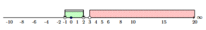
Παράδειγμα 2 (4ου Βαθμού):
Να λυθεί η ανίσωση: \((x^2 - 1)(x^2 - 3x + 2) > 0\)
Λύση
Παραγοντοποιούμε τα δύο τριώνυμα: \[x^2 - 1 = (x - 1)(x + 1)\] \[x^2 - 3x + 2 = (x - 1)(x - 2)\]
Άρα η ανίσωση γράφεται: \[(x + 1)(x - 1)^2(x - 2) > 0\]
Οι ρίζες είναι \(x = -1\), \(x = 1\) (διπλή), \(x = 2\).
Επειδή \((x - 1)^2 > 0\) για κάθε \(x \neq 1\), το πρόσημο καθορίζεται από τους παράγοντες \((x + 1)(x - 2)\):
\[\begin{array}{c|c cc c cc c cc c} x & -\infty & & -1 & & 1 & & 2 & & +\infty \\ \hline x + 1 & & - & 0 & + & | & + & | & + & \\ (x - 1)^2 & & + & | & + & 0 & + & | & + & \\ x - 2 & & - & | & - & | & - & 0 & + & \\ \hline \mathbf{P(x)} & & \mathbf{+} & \mathbf{0} & \mathbf{-} & \mathbf{0} & \mathbf{-} & \mathbf{0} & \mathbf{+} & \end{array}\]
Επιλέγουμε τα διαστήματα με θετικό πρόσημο: \[\mathbf{x \in (-\infty, -1) \cup (2, +\infty)}\]
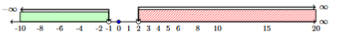
β) 2 Παραδείγματα για \(< 0\) (3ου & 4ου Βαθμού)
Παράδειγμα 3 (3ου Βαθμού):
Να λυθεί η ανίσωση: \(x^3 - 3x - 2 < 0\)
Λύση
Δοκιμάζουμε \(\rho = -1\): \(P(-1) = (-1)^3 - 3(-1) - 2 = -1 + 3 - 2 = 0\).
Εφαρμόζουμε σχήμα Horner για \(\rho = -1\): \[x^3 - 3x - 2 = (x + 1)(x^2 - x - 2) = (x + 1)(x + 1)(x - 2) = (x + 1)^2(x - 2)\]
Για να ισχύει \((x + 1)^2(x - 2) < 0\), πρέπει \(x - 2 < 0\) και ταυτόχρονα \((x + 1)^2 \neq 0\) (δηλαδή \(x \neq -1\)).
Άρα \(x < 2\) με \(x \neq -1\). \[\mathbf{x \in (-\infty, -1) \cup (-1, 2)}\]
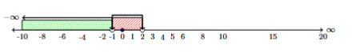
Παράδειγμα 4 (4ου Βαθμού - Διτετράγωνη):
Να λυθεί η ανίσωση: \(x^4 - 5x^2 + 4 < 0\)
Λύση
Θέτουμε \(y = x^2 \ge 0\). Η ανίσωση γίνεται: \[y^2 - 5y + 4 < 0\]
Οι ρίζες του τριωνύμου είναι \(y_1 = 1\) και \(y_2 = 4\).
Άρα \(1 < y < 4 \iff 1 < x^2 < 4\).
Λύνουμε το σύστημα ανισώσεων: \[x^2 > 1 \iff |x| > 1 \iff x < -1 \quad \text{ή} \quad x > 1\] \[x^2 < 4 \iff |x| < 2 \iff -2 < x < 2\]
Συναληθεύοντας τα διαστήματα: \[\mathbf{x \in (-2, -1) \cup (1, 2)}\]
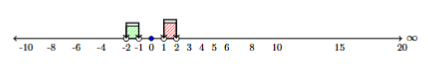
1.5 Προσδιορισμός Ρίζας με Προσέγγιση
1.5.1 Θεώρημα Ύπαρξης Ρίζας (Bolzano)
ΘΕΩΡΗΜΑ:
Έστω η πολυωνυμική συνάρτηση \(f(x) = a_\nu x^\nu + \dots + a_1 x + a_0\). Αν για δύο πραγματικούς αριθμούς \(a, b\) με \(a < b\) οι τιμές \(f(a), f(b)\) είναι ετερόσημες (δηλαδή \(\mathbf{f(a) \cdot f(b) < 0}\)), τότε υπάρχει μία τουλάχιστον ρίζα της εξίσωσης \(f(x) = 0\) στο ανοικτό διάστημα \((a, b)\).
Γεωμετρική Ερμηνεία
Αν η γραφική παράσταση της πολυωνυμικής συνάρτησης \(f\) διέρχεται από δύο σημεία \(A(a, f(a))\) και \(B(b, f(b))\) τα οποία βρίσκονται εκατέρωθεν του άξονα \(x'x\) (το ένα πάνω και το άλλο κάτω από τον άξονα), τότε η συνεχής καμπύλη \(y = f(x)\) τέμνει υποχρεωτικά τον άξονα \(x'x\) σε ένα τουλάχιστον σημείο \(x_0\) μεταξύ των \(a\) και \(b\).
1.5.2 Παραδείγματα
Παραδείγματα Προσεγγιστικού Υπολογισμού
Παράδειγμα 1 (Προσέγγιση Δεκάτου):
Να αποδειχθεί ότι η εξίσωση \(x^3 + x - 3 = 0\) έχει μία τουλάχιστον ρίζα στο διάστημα \((1, 2)\) και να βρεθεί η ρίζα με προσέγγιση δεκάτου.
Λύση
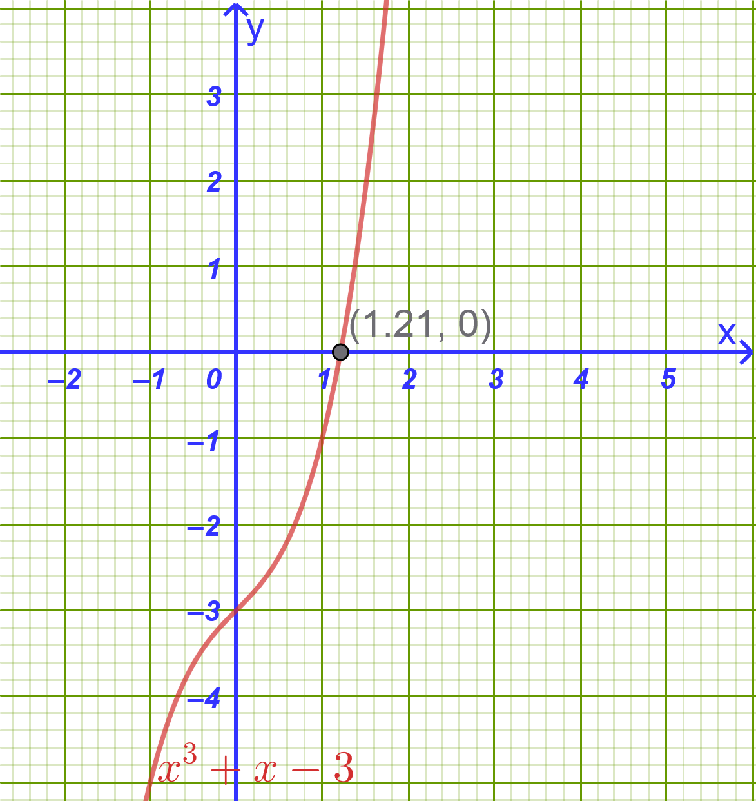
- 1ο Βήμα (Ύπαρξη ρίζας):
Θεωρούμε τη συνάρτηση \(f(x) = x^3 + x - 3\).
\(f(1) = 1^3 + 1 - 3 = -1 < 0\)
\(f(2) = 2^3 + 2 - 3 = 7 > 0\)
Επειδή \(f(1) \cdot f(2) = -7 < 0\), σύμφωνα με το θεώρημα υπάρχει τουλάχιστον μία ρίζα στο διάστημα \((1, 2)\).
2ο Βήμα (Προσέγγιση δεκάτου):
Υπολογίζουμε διαδοχικά τις τιμές της \(f(x)\) στα ενδιάμεσα σημεία:
\(f(1.1) = (1.1)^3 + 1.1 - 3 = 1.331 + 1.1 - 3 = -0.569 < 0\)
\(f(1.2) = (1.2)^3 + 1.2 - 3 = 1.728 + 1.2 - 3 = -0.072 < 0\)
\(f(1.3) = (1.3)^3 + 1.3 - 3 = 2.197 + 1.3 - 3 = +0.497 > 0\)
Επειδή \(f(1.2) \cdot f(1.3) < 0\), η εξίσωση έχει ρίζα στο διάστημα \((1.2, 1.3)\).
Άρα η ρίζα με προσέγγιση δεκάτου είναι \(x \approx 1.2\).
Παράδειγμα 2 (Ύπαρξη Πολλαπλών Ριζών):
Να αποδειχθεί ότι η εξίσωση \(x^4 - 4x - 1 = 0\) έχει δύο τουλάχιστον πραγματικές ρίζες σε διαφορετικά διαστήματα.
Λύση
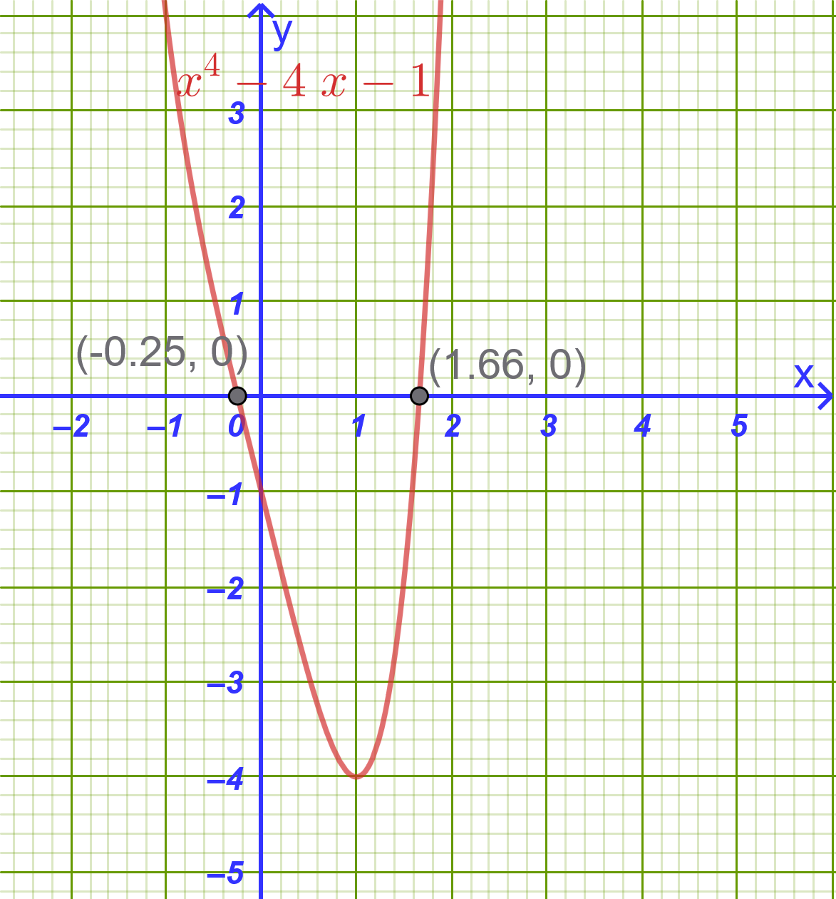
Θεωρούμε τη συνάρτηση \(f(x) = x^4 - 4x - 1\).
\(f(-1) = (-1)^4 - 4(-1) - 1 = 1 + 4 - 1 = 4 > 0\)
\(f(0) = 0^4 - 4(0) - 1 = -1 < 0\)
\(f(2) = 2^4 - 4(2) - 1 = 16 - 8 - 1 = 7 > 0\)
Στο διάστημα \((-1, 0)\): \(f(-1) \cdot f(0) = 4(-1) = -4 < 0\), άρα υπάρχει τουλάχιστον μία ρίζα \(x_1 \in (-1, 0)\).
Στο διάστημα \((0, 2)\): \(f(0) \cdot f(2) = (-1)(7) = -7 < 0\), άρα υπάρχει τουλάχιστον μία ρίζα \(x_2 \in (0, 2)\).
Επομένως, η εξίσωση έχει τουλάχιστον δύο πραγματικές ρίζες.
1.6 Ασκήσεις και Προβλήματα
1.6.1 Κατηγορία Α: Πολυωνυμικές Εξισώσεις & Παραγοντοποίηση (1–5)
- Να λυθεί στο \(\mathbb{R}\) η εξίσωση: \(x^3 - 2x^2 - x + 2 = 0\).
Υπόδειξη
\(x^3 - 2x^2 - x + 2 = 0 \implies x^2(x-2)-(x-2) =0 \implies (x-2)(x^2-1)=0 \implies ............\)
- Να λυθεί στο \(\mathbb{R}\) η εξίσωση: \(2x^3 + 3x^2 - 8x - 12 = 0\).
Υπόδειξη
\(2x^3 + 3x^2 - 8x - 12 = 0 \implies 2x(x^2-4)+3(x^2-4)=0 \implies ...................\)
- Να λυθεί η εξίσωση: \(x^4 - 5x^2 + 4 = 0\).
Υπόδειξη
\(x^4 - 5x^2 + 4 = 0\) , Βάλε όπου \(x^2=t ......................\)
Να λυθεί η εξίσωση: \(x^5 - 9x^3 = 0\).
Να λυθεί στο \(\mathbb{R}\) η εξίσωση: \((x^2 - 3x)^2 - 2(x^2 - 3x) - 8 = 0\).
Υπόδειξη
Βάλε όπου \(x^2-3x=t\) οπότε
\((x^2 - 3x)^2 - 2(x^2 - 3x) - 8 = 0 \implies t^2-2t-8=0 \implies \begin{cases} t_1=-2 \implies x^2-3x=-2 \\ t_2=4 \implies x^2-3x=4 \end{cases}\)
Λύνεις τις 2 εξισώσεις \(2^{ου}\) βαθμού.
1.6.2 Κατηγορία Β: Θεώρημα Ακέραιων Ριζών & Σχήμα Horner (6–10)
- Να λυθεί με το σχήμα Horner η εξίσωση: \(x^3 - 6x^2 + 11x - 6 = 0\).
Υπόδειξη
Δοκιμάζουμε τους διαιρέτες του -6 \(\pm1,\pm2,\pm3, \pm6\)
Με το 1:
\[\begin{array}{|cccc||c|} 1 & -6 & 11 & -6 & \ x=1 \\ \downarrow &1 & -5 & 6 & \\ \hline \mathbf{1} & \mathbf{-5} & \mathbf{6} & \mathbf{0} & \end{array}\]
Έτσι η αρχική γράφεται \(x^3 - 6x^2 + 11x - 6 = 0 \implies (x-1)(x^2-5x+6)=0\)
…………………………….
- Να βρεθούν οι ακέραιες ρίζες της εξίσωσης: \(x^4 - 2x^3 - 7x^2 + 8x + 12 = 0\).
Υπόδειξη
Δοκιμάζουμε με τους διαιρέτες του 12
Με το -2:
\[\begin{array}{|ccccc||c|} 1 & -2 & -7 & 8 & 12 & \ x=-2 \\ \downarrow &-2 & 8 & -2 & -12\\ \hline \mathbf{1} & \mathbf{-4} & \mathbf{1} & \mathbf{6} & \mathbf{0} \end{array}\]
και η αρχική γίνεται \(x^4 - 2x^3 - 7x^2 + 8x + 12 = 0 \implies (x+2)(x^3-4x^2+x+6)=0\)
Για τον παράγοντα \(x^3-4x^2+x+6\) συνεχίζουμε με Horner,
……………………………………….
Να λυθεί η εξίσωση: \(2x^3 - 9x^2 + 7x + 6 = 0\).
Να αποδειχθεί ότι το \(x = 2\) είναι διπλή ρίζα της εξίσωσης \(x^4 - 4x^3 + 5x^2 - 4x + 4 = 0\).
Υπόδειξη
Δύο φορές Horner με το 2
- Να βρεθούν οι τιμές του \(k \in \mathbb{Z}\) ώστε η εξίσωση \(x^3 - kx^2 + 3 = 0\) να έχει μία τουλάχιστον ακέραια ρίζα.
Υπόδειξη
Ψάχνουμε στους διαιρέτες του 3
Για \(x=1 \rightarrow P(1)=1-k+3=0 \implies k=4\)
Συνεχίζουμε με τους υπόλοιπους διαιρέτες ……………………………
1.6.3 Κατηγορία Γ: Πρόσημο Γινομένου & Πολυωνυμικές Ανισώσεις (11–15)
- Να λυθεί η ανίσωση: \((x - 2)(x^2 - 5x + 6) < 0\).
Υπόδειξη
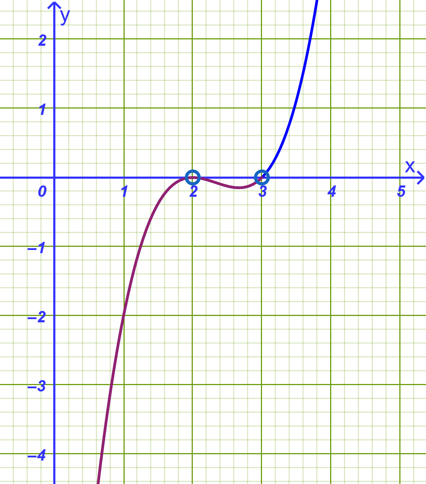
\[\begin{array}{c|c cc c cc c cc c} x & -\infty & & 2 & & & & 3 & & +\infty \\ \hline x - 2 & & - & 0 & + & + & + & + & + & \\ x^2-5x+6 & & + & 0 & - & - & - & 0 & + & \\ \hline \mathbf{P(x)} & & \mathbf{-} & \mathbf{0} & \mathbf{-} & \mathbf{-} & \mathbf{-} & \mathbf{0} & \mathbf{+} & \end{array}\]
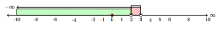
- Να λυθεί η ανίσωση: \(x^3 - 3x^2 - 4x + 12 > 0\).
Υπόδειξη
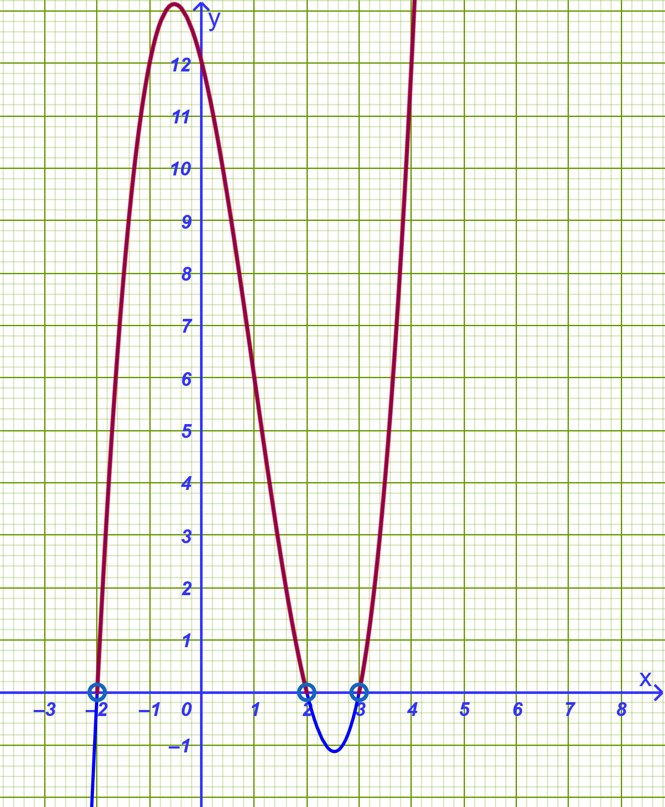
Με Horner βρίσκουμε
\[\begin{array}{|ccccc||c|} 1 & -3 & -4 & 12 & & \ x=-2 \\ \downarrow &-2 & 10 & -12 & \\ \hline \mathbf{1} & \mathbf{-5} & \mathbf{6} & \mathbf{0} & \mathbf{} \end{array}\]
Άρα η ανίσωση γράφεται \((x+2)(x^2-5x+6)>0\)
\[\begin{array}{c|c cc c cc c cc c} x & -\infty & & -2 & & 2& & 3 & & +\infty \\ \hline x + 2 & & - & 0 & + & + & + & + & + & \\ x^2-5x+6 & & + & + & + & 0 & - & 0 & + & \\ \hline \mathbf{P(x)} & & \mathbf{-} & \mathbf{0} & \mathbf{+} & \mathbf{0} & \mathbf{-} & \mathbf{0} & \mathbf{+} & \end{array}\]
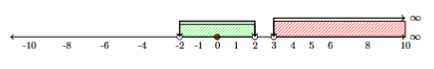
Να λυθεί η ανίσωση: \(x^4 - 3x^3 + 2x^2 \le 0\).
Να προσδιοριστεί το πρόσημο του πολυωνύμου \(P(x) = (x^2 - 9)(x^2 + 2x + 5)(1 - x)\).
Να λυθεί η ανίσωση: \(x^3 + x^2 - 5x + 3 \ge 0\).
1.6.4 Κατηγορία Δ: Θεώρημα Bolzano & Προσέγγιση Ρίζας (16–20)
- Να αποδειχθεί ότι η εξίσωση \(x^3 + 3x - 5 = 0\) έχει μία τουλάχιστον ρίζα στο διάστημα \((1, 2)\).
Υπόδειξη
\(P(1)=1^3+3\cdot1-5=-1\)
\(P(2)=2^3+3\cdot2-5=9\). Άρα \(P(1)\cdot P(2)<0\)
- Να βρεθεί η ρίζα της εξίσωσης \(x^3 + 5x - 3 = 0\) στο διάστημα \((0, 1)\) με προσέγγιση δεκάτου.
Υπόδειξη
\(P(0,5)=0,5^3+5\cdot 0,5-3=-0,375\)
\(P(0,6)=0,6^3+5\cdot 0,6-3=0,216 \implies x\approx 0,6\) με προσέγγιση εκατοστού \(x\approx 0,56\)
- Να αποδειχθεί ότι η γραφική παράσταση της συνάρτησης \(f(x) = x^4 - 3x - 2\) τέμνει τον άξονα \(x'x\) σε ένα τουλάχιστον σημείο στο διάστημα \((1, 2)\).
Υπόδειξη
Πρέπει \(f(1) \cdot f(2)<0\)
- Να αποδειχθεί ότι η εξίσωση \(2x^3 - 5x + 1 = 0\) έχει τρεις πραγματικές ρίζες στα διαστήματα \((-2, -1)\), \((0, 1)\) και \((1, 2)\).
Όμοια για κάθε διάστημα όπως στην 18.
- Να αποδειχθεί ότι η εξίσωση \(x^5 + x^3 + x - 1 = 0\) έχει μοναδική πραγματική ρίζα στο διάστημα \((0, 1)\).
1.6.5 Κατηγορία Ε: Σύνθετες Ασκήσεις & Πρακτικά Προβλήματα (21–30)
- (Γεωμετρικό Πρόβλημα): Ένα ορθογώνιο παραλληλεπίπεδο έχει διαστάσεις \(x\), \(x + 1\) και \(x + 2\) (σε μέτρα). Αν ο όγκος του είναι \(24 \text{ m}^3\), να υπολογιστούν οι διαστάσεις του.
Υπόδειξη
Θα έχουμε \(V=24 \implies x(x+1)(x+2)=24 \longrightarrow \ \ \ \) Λύνουμε \(\longrightarrow x=2\)
…………………….
- (Παραμετρική Εξίσωση): Δίνεται η εξίσωση \(x^3 - (\alpha + 2)x^2 + (2\alpha + 1)x - \alpha = 0\).
α) Να αποδειχθεί ότι το \(x = 1\) είναι ρίζα της εξίσωσης για κάθε \(\alpha \in \mathbb{R}\).
β) Να βρεθούν οι υπόλοιπες ρίζες της εξίσωσης ως συνάρτηση του \(\alpha\).
Υπόδειξη
α) Πρέπει \(P(1)=0 \ \ \), Πράγματι \(1^3 - (\alpha + 2)1^2 + (2\alpha + 1)1 - \alpha = 0\)
β) Με Horner βρίσκουμε τον δεύτερο παράγοντα
\[\begin{array}{|ccccc||c|} 1 & -α-2 & 2α+1 & -α & & \ x=1 \\ \downarrow &1 & -α-1 & α & \\ \hline \mathbf{1} & \mathbf{-α-1} & \mathbf{α} & \mathbf{0} & \mathbf{} \end{array}\]
Άρα ο δεύτερος παράγοντας είναι \(x^2-(a+1)x+a \ \ \) Λύνουμε την εξίσωση \(x^2-(a+1)x+a=0\)
\(Δ= ............................ = α-1, α\ge 1\)
\(x_{1,2}=\) ……………………………….. \(x=a, x=1\)
- (Σύστημα Ανισώσεων): Να λυθεί το σύστημα ανισώσεων: \[\begin{cases} x^3 - 4x > 0 \\ x^2 - 3x + 2 \le 0 \end{cases}\]
Υπόδειξη
Λύνουμε την κάθε ανίσωση χωριστά και βρίσκουμε που συναληθεύουν.
- (Πολυωνυμική Συνάρτηση & Πεδίο Ορισμού): Να βρεθεί το πεδίο ορισμού της συνάρτησης \(f(x) = \sqrt{x^3 - 2x^2 - 5x + 6}\).
Υπόδειξη
Πρέπει \(x^3 - 2x^2 - 5x + 6 \ge 0\). Λύνουμε την ανίσωση.
- (Πρόβλημα Κατασκευής): Από τα τέσσερα άκρα ενός τετραγώνου λαμαρίνας πλευράς \(10 \text{ cm}\) κόβουμε τέσσερα ίσα τετράγωνα πλευράς \(x \text{ cm}\) και διπλώνουμε τα χείλη για να σχηματίσουμε ένα ανοικτό κουτί.
α) Να εκφράσετε τον όγκο \(V(x)\) του κουτιού ως συνάρτηση του \(x\).
β) Να βρείτε για ποιες τιμές του \(x\) ο όγκος του κουτιού είναι \(48 \text{ cm}^3\).
Υπόδειξη
- α) \(V(x)=(10-2x)(10-2x)x\)
……………………………..
- β) Λύνουμε την εξίσωση \(V(x)=(10-2x)(10-2x)x=24\)
……………………………………
- Οικολογία & Περιβαλλοντική Μηχανική
Εκφώνηση:
Σε μια τεχνητή λίμνη εισάγεται ένας πληθυσμός ωφέλιμων μικροοργανισμών για τον καθαρισμό του νερού. Η πυκνότητα του πληθυσμού \(P\) (σε χιλιάδες ανά \(\text{m}^3\)) μετά από \(t\) εβδομάδες (\(t \ge 0\)) περιγράφεται από τη σχέση: \[P(t) = \frac{4t^2 + 8t}{t^3 + 32}\] Η πυκνότητα του πληθυσμού λαμβάνει ακρότατη τιμή όταν ο χρόνος \(t\) ικανοποιεί την πολυωνυμική εξίσωση: \[t^4 + 11t^3 - 196t^2 - 260t + 1\,200 = 0\]
Να λύσετε την εξίσωση στο \(\mathbb{R}\).
Λαμβάνοντας υπόψη ότι ο χρόνος είναι \(t > 0\), να βρείτε σε ποιο χρονικό σημείο η πυκνότητα \(P\) γίνεται μέγιστη και να υπολογίσετε την τιμή της μέγιστης αυτής πυκνότητας.
Λύση:
i) Επίλυση της εξίσωσης \(t^4 + 11t^3 - 196t^2 - 260t + 1\,200 = 0\)
Αναζητούμε ακέραιες ρίζες στους διαιρέτες του σταθερού όρου \(1\,200\) (\(\pm 1, \pm 2, \dots\)).
Δοκιμάζουμε για \(t = 2\): \[2^4 + 11(2^3) - 196(2^2) - 260(2) + 1\,200 = 16 + 88 - 784 - 520 + 1\,200 = 0\] Άρα το \(t = 2\) είναι ρίζα του πολυωνύμου.
Εφαρμόζουμε το σχήμα Horner με το \(2\):
\[\begin{array}{c|rrrrr} & 1 & 11 & -196 & -260 & 1\,200 \\ 2 & \downarrow & 2 & 26 & -340 & -1\,200 \\ \hline & 1 & 13 & -170 & -600 & 0 \end{array}\]
Η εξίσωση γράφεται: \[(t - 2)(t^3 + 13t^2 - 170t - 600) = 0\]
Για το πολυώνυμο \(t^3 + 13t^2 - 170t - 600\), δοκιμάζουμε το \(t = 10\): \[10^3 + 13(10^2) - 170(10) - 600 = 1\,000 + 1\,300 - 1\,700 - 600 = 0\]
Άρα και το \(t = 10\) είναι ρίζα.
Εφαρμόζουμε ξανά το σχήμα Horner με το \(10\):
\[\begin{array}{c|rrrr} & 1 & 13 & -170 & -600 \\ 10 & \downarrow & 10 & 230 & 600 \\ \hline & 1 & 23 & 60 & 0 \end{array}\]
Έτσι, το πολυώνυμο παραγοντοποιείται πλήρως ως: \[(t - 2)(t - 10)(t^2 + 23t + 60) = 0\]
Λύνουμε το τριώνυμο \(t^2 + 23t + 60 = 0\): \[\Delta = 23^2 - 4(1)(60) = 529 - 240 = 289 = 17^2\] \[t = \frac{-23 \pm 17}{2} \implies t = -3 \quad \text{ή} \quad t = -20\]
Επομένως, οι ρίζες της εξίσωσης είναι: \[t = -20, \quad t = -3, \quad t = 2, \quad t = 10\]
ii) Εύρεση μέγιστης πυκνότητας
Επειδή ο χρόνος είναι \(t > 0\), δεκτές είναι μόνο οι θετικές ρίζες: \[t = 2 \quad \text{και} \quad t = 10\]
Υπολογίζουμε την τιμή της πυκνότητας \(P(t)\) για καθεμία από αυτές:
Για \(t = 2\): \[P(2) = \frac{4(2^2) + 8(2)}{2^3 + 32} = \frac{16 + 16}{8 + 32} = \frac{32}{40} = 0,8 \text{ χιλιάδες}/\text{m}^3\]
Για \(t = 10\): \[P(10) = \frac{4(10^2) + 8(10)}{10^3 + 32} = \frac{400 + 80}{1\,000 + 32} = \frac{480}{1\,032} \approx 0,465 \text{ χιλιάδες}/\text{m}^3\]
Συνεπώς:
Η πυκνότητα γίνεται μέγιστη σε χρόνο \(t = 2\) εβδομάδες.
Η μέγιστη τιμή της πυκνότητας είναι \(0,8\) χιλιάδες ανά \(\text{m}^3\) (δηλαδή \(800\) μικροοργανισμοί ανά \(\text{m}^3\)).
- Αεροναυπηγική – Κατανάλωση Καυσίμου Πυραύλου
Εκφώνηση:
Κατά τη διάρκεια δοκιμαστικής πτήσης ενός μη επανδρωμένου σκάφους, η εναπομένουσα μάζα καυσίμου \(M\) (σε \(\text{kg}\)) συναρτήσει του χρόνου \(t\) (σε λεπτά) από την εκτόξευση δίνεται από τον τύπο: \[M(t) = 5\left(1\,000 - 300t + 30t^2 - t^3\right), \quad 0 \le t \le 15\]
Να βρείτε σε πόσα λεπτά μετά την εκτόξευση θα εξαντληθούν πλήρως τα καύσιμα του σκάφους.
Λύση:
Τα καύσιμα εξαντλούνται πλήρως όταν η μάζα μηδενιστεί, δηλαδή \(M(t) = 0\): \[5\left(1\,000 - 300t + 30t^2 - t^3\right) = 0\]
Διαιρούμε με το \(5\): \[1\,000 - 300t + 30t^2 - t^3 = 0\]
Αναγνωρίζουμε την ταυτότητα αναπτύγματος κύβου διαφοράς: \[(10 - t)^3 = 0 \iff 10 - t = 0 \iff t = 10\text{ λεπτά}\]
Άρα τα καύσιμα θα εξαντληθούν ακριβώς στα \(10\) λεπτά.
- Σεισμολογία – Απόσβεση Δόνησης
Εκφώνηση:
Κατά τη διάρκεια σεισμικής δόνησης, η κατακόρυφη μετατόπιση \(y\) (σε \(\text{cm}\)) ενός αντικραδασμικού ελατηρίου βάσης κτιρίου δίνεται, \(t\) δευτερόλεπτα μετά την εκδήλωση του φαινομένου, από τον τύπο: \[y(t) = 8t\left(t^2 - 9t + 14\right)\]
Ποιες χρονικές στιγμές (\(t > 0\)) το ελατήριο διέρχεται από τη θέση ισορροπίας του (\(y = 0\));
Λύση:
Το ελατήριο βρίσκεται στη θέση ισορροπίας όταν \(y(t) = 0\): \[8t\left(t^2 - 9t + 14\right) = 0\]
Επειδή αναζητούμε στιγμές μετά την έναρξη (\(t > 0\)), ισχύει: \[t^2 - 9t + 14 = 0\]
Παραγοντοποιούμε το δευτεροβάθμιο τριώνυμο: \[(t - 2)(t - 7) = 0\] Άρα: \[t = 2\text{ s} \quad \text{και} \quad t = 7\text{ s}\]
Το ελατήριο περνά από τη θέση ισορροπίας στα \(2\) δευτερόλεπτα και στα \(7\) δευτερόλεπτα.
- Αρχιτεκτονική & Logistics – Σχεδιασμός Ψυκτικού Θαλάμου
Εκφώνηση:
Μια εταιρεία logistics κατασκευάζει έναν επιμήκη ψυκτικό θάλαμο σχήματος ορθογωνίου παραλληλεπιπέδου με τετραγωνική πρόσοψη πλευράς \(x\text{ m}\) και μήκος \(y\text{ m}\).
Λόγω προδιαγραφών του συστήματος μόνωσης, το άθροισμα του μήκους \(y\) και της περιμέτρου της πρόσοψης δεν πρέπει να ξεπερνά τα \(36\text{ m}\).
Αν ο απαιτούμενος όγκος αποθήκευσης είναι \(432\text{ m}^3\), να βρείτε τις ακριβείς διαστάσεις \(x\) και \(y\) του θαλάμου.
Λύση:
Η περίμετρος της τετραγωνικής πρόσοψης είναι \(4x\).
Σύμφωνα με τον περιορισμό: \[y + 4x = 36 \implies y = 36 - 4x\] με φυσικούς περιορισμούς \(x > 0\) και \(36 - 4x > 0 \implies 0 < x < 9\).
Ο τύπος του όγκου είναι: \[V = x^2 \cdot y = 432\]
Αντικαθιστούμε το \(y\): \[x^2(36 - 4x) = 432 \implies 36x^2 - 4x^3 = 432\]
Διαιρούμε όλους τους όρους με το \(4\) και αναδιατάσσουμε: \[x^3 - 9x^2 + 108 = 0\]
Αναζητούμε ακέραιες ρίζες στους διαιρέτες του \(108\):
Δοκιμάζουμε \(x = 6\): \[6^3 - 9(6^2) + 108 = 216 - 9(36) + 108 = 216 - 324 + 108 = 0\]
Άρα το \(x = 6\) είναι δεκτή λύση.
Υπολογίζουμε το μήκος \(y\): \[y = 36 - 4(6) = 36 - 24 = 12\text{ m}\]
(Σημείωση: Με σχήμα Horner, \(x^3 - 9x^2 + 108 = (x - 6)(x^2 - 3x - 18) = (x - 6)^2(x + 3) = 0\), οπότε η μόνη θετική λύση είναι \(x = 6\)).
Οι διαστάσεις του θαλάμου είναι \(6\text{ m} \times 6\text{ m} \times 12\text{ m}\).
- Μικροοικονομία – Σημείο Ισορροπίας Κόστους και Εσόδων
Εκφώνηση:
Σε μια βιομηχανία παραγωγής εξαρτημάτων, η συνάρτηση συνολικών εσόδων \(R(x)\) (σε χιλιάδες ευρώ) συνδέεται με την παραγωγή \(x\) (σε χιλιάδες τεμάχια) μέσω της καμπύλης: \[y = x^3 - 2x^2\]
Η γραμμή του μεταβλητού κόστους είναι μια ευθεία που διέρχεται από τα σημεία \(A(1, 4)\) και \(B(3, 14)\).
Να βρείτε την εξίσωση της ευθείας του κόστους.
Να δείξετε ότι τα επίπεδα παραγωγής στα οποία τα έσοδα ισούνται με το κόστος προσδιορίζονται από τις ρίζες της εξίσωσης: \[x^3 - 2x^2 - 5x + 1 = 0\]
Αν η ευθεία κόστους ήταν αντ’ αυτού η \(y = 7x - 12\), να βρείτε όλα τα σημεία τομής της με την καμπύλη εσόδων.
Λύση:
i) Βρίσκουμε τον συντελεστή διεύθυνσης της ευθείας: \[\lambda = \frac{14 - 4}{3 - 1} = \frac{10}{2} = 5\]
Η εξίσωση της ευθείας είναι: \[y - 4 = 5(x - 1) \implies y = 5x - 1\]
ii) Για την εξίσωση εσόδων και κόστους: \[x^3 - 2x^2 = 5x - 1 \iff x^3 - 2x^2 - 5x + 1 = 0\]
iii) Εξισώνουμε με τη νέα ευθεία \(y = 7x - 12\): \[x^3 - 2x^2 = 7x - 12 \iff x^3 - 2x^2 - 7x + 12 = 0\]
Εξετάζουμε ακέραιες ρίζες στους διαιρέτες του \(12\):
Για \(x = 3\): \[3^3 - 2(3^2) - 7(3) + 12 = 27 - 18 - 21 + 12 = 0\]
Με σχήμα Horner ή παραγοντοποίηση: \[(x - 3)(x^2 + x - 4) = 0\]
Οι υπόλοιπες ρίζες προκύπτουν από το τριώνυμο \(x^2 + x - 4 = 0\) (\(\Delta = 1 + 16 = 17\)): \[x_{1,2} = \frac{-1 \pm \sqrt{17}}{2}\]
Άρα το ακέραιο σημείο τομής είναι για \(x = 3\) με τεταγμένη \(y = 7(3) - 12 = 9\), δηλαδή το σημείο \((3, 9)\).
2 ΔΙΑΓΩΝΙΣΜΑ ΑΞΙΟΛΟΓΗΣΗΣ: ΠΟΛΥΩΝΥΜΙΚΕΣ ΕΞΙΣΩΣΕΙΣ ΚΑΙ ΑΝΙΣΩΣΕΙΣ
Μάθημα: Άλγεβρα Β’ Γενικού Λυκείου
Ενότητα: Πολυωνυμικές Εξισώσεις, Θεώρημα Ακέραιων Ριζών, Σχήμα Horner, Πρόσημο Γινομένου, Πολυωνυμικές Ανισώσεις & Θεώρημα Bolzano
Διάρκεια: 60 λεπτά
2.1 ΘΕΜΑ Α (Θεωρία & Αποδείξεις — 25 Μονάδες)
Α1. (8 Μονάδες)
Τι ονομάζεται πολυωνυμική εξίσωση βαθμού \(\nu\) και τι ρίζα αυτής;
Πώς επιλύεται μια πολυωνυμική εξίσωση βαθμού \(\nu > 2\) με τη μέθοδο της παραγοντοποίησης;
Α2. (10 Μονάδες)
Να διατυπώσετε και να αποδείξετε το Θεώρημα Ακέραιων Ριζών για πολυωνυμική εξίσωση με ακέραιους συντελεστές.
Α3. (7 Μονάδες)
Να χαρακτηρίσετε τις παρακάτω προτάσεις ως Σωστό (Σ) ή Λάθος (Λ):
Αν ο ακέραιος \(\rho \neq 0\) είναι ρίζα μιας πολυωνυμικής εξίσωσης με ακέραιους συντελεστές, τότε ο \(\rho\) είναι διαιρέτης του σταθερού όρου \(a_0\).
Κάθε πολυωνυμική εξίσωση περιττού βαθμού με πραγματικούς συντελεστές έχει τουλάχιστον μία πραγματική ρίζα.
Η ανίσωση \(A(x) \cdot B(x) > 0\) είναι πάντοτε ισοδύναμη με την κλασματική ανίσωση \(\dfrac{A(x)}{B(x)} > 0\) (για τις τιμές όπου \(B(x) \neq 0\)).
Αν για μια πολυωνυμική συνάρτηση \(f\) ισχύει \(f(a) \cdot f(b) < 0\) σε ένα διάστημα \([a, b]\), τότε η εξίσωση \(f(x) = 0\) έχει υποχρεωτικά μία μόνο ρίζα στο \((a, b)\).
Οι πιθανές ακέραιες ρίζες της εξίσωσης \(x^3 - 3x^2 + 2x - 5 = 0\) είναι οι αριθμοί \(\pm 1, \pm 5\).
2.2 ΘΕΜΑ Β (Πολυωνυμικές Εξισώσεις — 25 Μονάδες)
Β1. (12 Μονάδες)
Να λυθεί στο \(\mathbb{R}\) η πολυωνυμική εξίσωση 3ου βαθμού: \[x^3 - 4x^2 + x + 6 = 0\]
Β2. (13 Μονάδες)
Να λυθεί στο \(\mathbb{R}\) η πολυωνυμική εξίσωση 4ου βαθμού: \[2x^4 - 3x^3 - 11x^2 + 6x = 0\]
2.3 ΘΕΜΑ Γ (Πολυωνυμικές Ανισώσεις & Πρόσημο Γινομένου — 25 Μονάδες)
Γ1. (12 Μονάδες)
Να λυθεί στο \(\mathbb{R}\) η ανίσωση: \[(x^2 - 4)(x^2 - 3x + 2) \le 0\]
Γ2. (13 Μονάδες)
Να λυθεί στο \(\mathbb{R}\) η ανίσωση: \[x^3 - 2x^2 - 5x + 6 > 0\]
2.4 ΘΕΜΑ Δ (Σύνθετο Θέμα & Προσεγγιστικός Υπολογισμός Ρίζας — 25 Μονάδες)
Δ1. (12 Μονάδες)
Δίνεται η πολυωνυμική συνάρτηση \(f(x) = x^3 + 2x - 5\).
Να αποδείξετε ότι η εξίσωση \(f(x) = 0\) έχει τουλάχιστον μία πραγματική ρίζα στο ανοικτό διάστημα \((1, 2)\).
Να προσδιορίσετε τη ρίζα αυτή με προσέγγιση δεκάτου.
Δ2. (13 Μονάδες)
Δίνεται το πολυώνυμο \(P(x) = x^3 - (\alpha + 1)x^2 + (\alpha - 2)x + 2\), όπου \(\alpha \in \mathbb{R}\).
Να αποδείξετε ότι το \(x = 1\) είναι ρίζα του \(P(x)\) για κάθε τιμή της παραμέτρου \(\alpha \in \mathbb{R}\).
Να βρείτε τις τιμές του \(\alpha \in \mathbb{R}\) για τις οποίες η εξίσωση \(P(x) = 0\) έχει τρεις πραγματικές και άνισες ρίζες.
3 ΑΝΑΛΥΤΙΚΕΣ ΛΥΣΕΙΣ ΔΙΑΓΩΝΙΣΜΑΤΟΣ
3.1 ΘΕΜΑ Α
Α1.1: Πολυωνυμική εξίσωση βαθμού \(\nu\) ονομάζεται κάθε εξίσωση της μορφής \(a_\nu x^\nu + a_{\nu-1} x^{\nu-1} + \dots + a_1 x + a_0 = 0\), με \(a_\nu \neq 0\). Ρίζα της εξίσωσης ονομάζεται κάθε πραγματικός αριθμός \(\rho\) για τον οποίο η αριθμητική τιμή του πολυωνύμου ισούται με μηδέν, δηλαδή \(P(\rho) = 0\).
Α1.2: Για εξισώσεις βαθμού \(\nu > 2\), μεταφέρουμε όλους τους όρους στο πρώτο μέλος ώστε η εξίσωση να πάρει τη μορφή \(P(x) = 0\). Στη συνέχεια παραγοντοποιούμε το \(P(x)\) σε γινόμενο πρωτοβάθμιων ή δευτεροβάθμιων παραγόντων \(P_1(x) \cdot P_2(x) \cdots P_k(x) = 0\), οπότε αναγόμαστε στις απλούστερες εξισώσεις \(P_1(x) = 0 \text{ ή } P_2(x) = 0 \dots \text{ ή } P_k(x) = 0\).
Α2: Θεώρημα Ακέραιων Ριζών: Έστω η πολυωνυμική εξίσωση \(a_\nu x^\nu + a_{\nu-1} x^{\nu-1} + \dots + a_1 x + a_0 = 0\) με ακέραιους συντελεστές (\(a_\nu \neq 0, a_0 \neq 0\)). Αν ο ακέραιος \(\rho \neq 0\) είναι ρίζα της εξίσωσης, τότε ο \(\rho\) είναι διαιρέτης του σταθερού όρου \(a_0\).
Απόδειξη: Αφού ο \(\rho \neq 0\) είναι ρίζα της εξίσωσης, ισχύει: \[a_\nu \rho^\nu + a_{\nu-1} \rho^{\nu-1} + \dots + a_1 \rho + a_0 = 0\]
Απομονώνουμε τον σταθερό όρο \(a_0\): \[a_0 = -a_\nu \rho^\nu - a_{\nu-1} \rho^{\nu-1} - \dots - a_1 \rho\]
Βγάζουμε κοινό παράγοντα το \(\rho\): \[a_0 = \rho \cdot \left(-a_\nu \rho^{\nu-1} - a_{\nu-1} \rho^{\nu-2} - \dots - a_1\right)\]
Επειδή οι συντελεστές \(a_1, \dots, a_\nu\) και ο \(\rho\) είναι ακέραιοι, η παράσταση εντός της παρενθέσεως είναι ακέραιος αριθμός \(k\). Επομένως \(a_0 = \rho \cdot k\), που σημαίνει ότι ο \(\rho\) διαιρεί τον \(a_0\).
Α3:
Σωστό (Βασική διατύπωση του θεωρήματος ακέραιων ριζών).
Σωστό (Λόγω της συνέχειας των πολυωνυμικών συναρτήσεων και των ορίων στο \(\pm \infty\)).
Σωστό (Το πρόσημο του γινομένου και του πηλίκου δύο παραστάσεων ταυτίζεται για τις τιμές όπου ορίζεται το πηλίκο).
Λάθος (Το θεώρημα Bolzano εξασφαλίζει την ύπαρξη τουλάχιστον μίας ρίζας, όχι απαραίτητα μοναδικής).
Σωστό (Οι διαιρέτες του σταθερού όρου \(a_0 = -5\) είναι οι \(\pm 1, \pm 5\)).
3.2 ΘΕΜΑ Β
Β1:
Για την εξίσωση \(x^3 - 4x^2 + x + 6 = 0\), οι πιθανές ακέραιες ρίζες είναι οι διαιρέτες του \(6\), δηλαδή οι \(\pm 1, \pm 2, \pm 3, \pm 6\).
Για \(\rho = -1\): \(P(-1) = (-1)^3 - 4(-1)^2 + (-1) + 6 = -1 - 4 - 1 + 6 = 0\).
Εφαρμόζουμε το σχήμα Horner για \(\rho = -1\):
\[\begin{array}{c|ccc|c|c} 1 & -4 & 1 & 6 & \rho = -1 \\ & -1 & 5 & -6 & \\ \hline 1 & -5 & 6 & \mathbf{0} & \end{array}\]
Η εξίσωση γράφεται:
\[(x + 1)(x^2 - 5x + 6) = 0\]
- \(x + 1 = 0 \iff \mathbf{x = -1}\)
- \(x^2 - 5x + 6 = 0 \iff (x - 2)(x - 3) = 0 \iff \mathbf{x = 2} \quad \text{ή} \quad \mathbf{x = 3}\)
Άρα το σύνολο λύσεων είναι \(S = \{-1, 2, 3\}\).
Β2:
Βγάζουμε κοινό παράγοντα το \(x\): \[x(2x^3 - 3x^2 - 11x + 6) = 0 \iff x = 0 \quad \text{ή} \quad 2x^3 - 3x^2 - 11x + 6 = 0\]
Για την εξίσωση \(Q(x) = 2x^3 - 3x^2 - 11x + 6 = 0\), οι διαιρέτες του \(6\) είναι οι \(\pm 1, \pm 2, \pm 3, \pm 6\).
Δοκιμάζουμε \(\rho = 3\): \(Q(3) = 2(27) - 3(9) - 11(3) + 6 = 54 - 27 - 33 + 6 = 0\).
Εφαρμόζουμε σχήμα Horner με \(\rho = 3\):
\[\begin{array}{c|ccc|c|c} 2 & -3 & -11 & 6 & \rho = 3 \\ & 6 & 9 & -6 & \\ \hline 2 & 3 & -2 & \mathbf{0} & \end{array}\]
Το πηλίκο είναι το τριώνυμο \(2x^2 + 3x - 2 = 0\).
Υπολογίζουμε τη διακρίνουσα: \(\Delta = 3^2 - 4(2)(-2) = 9 + 16 = 25\).
Οι ρίζες του τριωνύμου είναι: \[x = \frac{-3 \pm 5}{4} \implies \mathbf{x = \frac{1}{2}} \quad \text{ή} \quad \mathbf{x = -2}\]
Άρα οι λύσεις της αρχικής εξίσωσης είναι \(S = \left\{-2, 0, \frac{1}{2}, 3\right\}\).
3.3 ΘΕΜΑ Γ
Γ1:
Παραγοντοποιούμε τους δύο παράγοντες του γινομένου:
\(x^2 - 4 = (x - 2)(x + 2)\)
\(x^2 - 3x + 2 = (x - 1)(x - 2)\)
Άρα η ανίσωση παίρνει τη μορφή: \[(x + 2)(x - 1)(x - 2)^2 \le 0\]
Συντάσσουμε τον πίνακα προσήμων:
\[\begin{array}{c|c cc c cc c cc c} x & -\infty & & -2 & & 1 & & 2 & & +\infty \\ \hline x + 2 & & - & 0 & + & | & + & | & + & \\ x - 1 & & - & | & - & 0 & + & | & + & \\ (x - 2)^2 & & + & | & + & | & + & 0 & + & \\ \hline \mathbf{P(x)} & & \mathbf{+} & \mathbf{0} & \mathbf{-} & \mathbf{0} & \mathbf{+} & \mathbf{0} & \mathbf{+} & \end{array}\]
Αναζητούμε τις τιμές όπου \(P(x) \le 0\):
- Η ανίσωση αληθεύει για \(x \in [-2, 1]\) καθώς και για τη μεμονωμένη ρίζα \(x = 2\).
Άρα το σύνολο λύσεων είναι \(x \in [-2, 1] \cup \{2\}\).
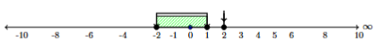
Γ2:
Βρίσκουμε τις ρίζες του πολυώνυμου \(P(x) = x^3 - 2x^2 - 5x + 6\).
Με δοκιμή διαιρετών του \(6\), διαπιστώνουμε ότι \(P(1) = 1 - 2 - 5 + 6 = 0\).
Με σχήμα Horner για \(\rho = 1\), παίρνουμε \(P(x) = (x - 1)(x^2 - x - 6) = (x - 1)(x - 3)(x + 2)\).
Πίνακας προσήμων για τις ρίζες \(x = -2, 1, 3\):
\[\begin{array}{c|c cc c cc c cc c} x & -\infty & & -2 & & 1 & & 3 & & +\infty \\ \hline x + 2 & & - & 0 & + & | & + & | & + & \\ x - 1 & & - & | & - & 0 & + & | & + & \\ x - 3 & & - & | & - & | & - & 0 & + & \\ \hline \mathbf{P(x)} & & \mathbf{-} & \mathbf{0} & \mathbf{+} & \mathbf{0} & \mathbf{-} & \mathbf{0} & \mathbf{+} & \end{array}\]
Επιλέγουμε τα διαστήματα στα οποία \(P(x) > 0\): \[\mathbf{x \in (-2, 1) \cup (3, +\infty)}\]
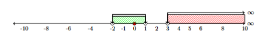
3.4 ΘΕΜΑ Δ
Δ1.1:
Η συνάρτηση \(f(x) = x^3 + 2x - 5\) είναι πολυωνυμική, άρα συνεχής στο $$.
\(f(1) = 1^3 + 2(1) - 5 = 3 - 5 = -2 < 0\)
\(f(2) = 2^3 + 2(2) - 5 = 8 + 4 - 5 = 7 > 0\)
Επειδή \(f(1) \cdot f(2) = (-2) \cdot 7 = -14 < 0\), σύμφωνα με το Θεώρημα Bolzano, υπάρχει τουλάχιστον μία ρίζα \(x_0 \in (1, 2)\) τέτοια ώστε \(f(x_0) = 0\).
Δ1.2:
Υπολογίζουμε τις τιμές της \(f(x)\) στα ενδιάμεσα σημεία με βήμα \(0.1\):
\(f(1.3) = (1.3)^3 + 2(1.3) - 5 = 2.197 + 2.6 - 5 = -0.203 < 0\)
\(f(1.4) = (1.4)^3 + 2(1.4) - 5 = 2.744 + 2.8 - 5 = +0.544 > 0\)
Επειδή \(f(1.3) \cdot f(1.4) < 0\), η ρίζα βρίσκεται στο διάστημα \((1.3, 1.4)\).
Επομένως, η ρίζα με προσέγγιση δεκάτου είναι \(x \approx 1.3\).Δ2.1:
Υπολογίζουμε την τιμή \(P(1)\): \[P(1) = 1^3 - (\alpha + 1)(1)^2 + (\alpha - 2)(1) + 2 = 1 - \alpha - 1 + \alpha - 2 + 2 = 0\]
Άρα το \(x = 1\) είναι πράγματι ρίζα του πολυωνύμου \(P(x)\) για κάθε \(\alpha \in \mathbb{R}\).
Δ2.2:
Εφαρμόζουμε το σχήμα Horner στο \(P(x)\) για την γνωστή ρίζα \(\rho = 1\):
\[\begin{array}{c|ccc|c|c} 1 & -(\alpha+1) & \alpha-2 & 2 & \rho = 1 \\ & 1 & -\alpha & -2 & \\ \hline 1 & -\alpha & -2 & \mathbf{0} & \end{array}\]
Το πηλίκο είναι το δευτεροβάθμιο τριώνυμο \(Q(x) = x^2 - \alpha x - 2\).
Για να έχει η εξίσωση \(P(x) = 0\) τρεις πραγματικές και άνισες ρίζες, πρέπει:
Το τριώνυμο \(Q(x)\) να έχει δύο πραγματικές και άνισες ρίζες, δηλαδή η διακρίνουσά του να είναι θετική: \[\Delta = (-\alpha)^2 - 4(1)(-2) = \alpha^2 + 8 > 0\]
Η ανισότητα αυτή ισχύει για κάθε \(\alpha \in \mathbb{R}\).
Η ρίζα \(x = 1\) να μην είναι ρίζα του τριωνύμου \(Q(x)\) (ώστε οι τρεις ρίζες να είναι διακεκριμένες): \[Q(1) \neq 0 \iff 1^2 - \alpha(1) - 2 \neq 0 \iff -1 - \alpha \neq 0 \iff \mathbf{\alpha \neq -1}\]
Συνεπώς, η εξίσωση \(P(x) = 0\) έχει 3 πραγματικές και άνισες ρίζες για κάθε \(\alpha \in \mathbb{R} \setminus \{-1\}\).
Εύχομαι
ΚΑΛΗ ΜΕΛΕΤΗ!